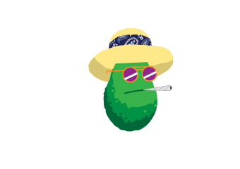

Larry the talking Avacado says, "Press scroll to print."

College Daze A Pilot About Nothing
By Ian Rey Sifuentes & José Gustavo Castillo
PAGE 1
COLD OPEN
EXT. SNELL CAMPUS - MIDDAY
PA (V.O.) Please welcome, Sandra Johnson.
Round of applause. Subtitle: 2014.
FADE FROM BLACK
SANDRA JOHNSON(V.O.) Welcome Class of 2018! We hope you are enjoying Bearcat Week at Snell University!
SHOT OF SNELLU MASCOT Round of applause. Show a bronze statue of a bearcat - or what looks like a bearcat. Its plaque reads “Home of the Bearcats”. SANDRA continues to talk as we travel through another beautiful day at Snell University.
SANDRA JOHNSON (V.O.) Hello everyone, my name is Sandra Johnson. I am a biomedical science major and I am the loudest and proudest Bearcat of 2017! Before we get started my friends and I would like to congratulate you. Snell University is one of the most prestigious universities in the world, so congratulations on becoming a Bearcat!
SHOT OF STAGE Round of applause.
SANDRA JOHNSON My friends and I are on a mission - to make your freshman year as fun as possible! This is your class’s home for the next four years - and we’re here to help you know the community!
SHOT OF CLASS OF 2018 Young wide-eyed students watch as cheerleaders and a small portion of the school band perform a quick number on stage. The new freshman are so excited to be in attendance.
SANDRA JOHNSON (V.O.) Snell University provides rich education and experience in today’s market. Just look at our state-of-the-art science wing. SHOT OF SCIENCE LAB
PAGE 2
As SANDRA talks we visit the academic buildings.
SANDRA JOHNSON (V.O.) Here, you can intern from NASA, our number one recruiter.
SHOT OF ENGINEERS Engineers work on impressive robots. We continue to tour campus...
SANDRA JOHNSON (V.O.) Across the street, our engineering labs prepare critical thinkers for successful businesses like Tesla and GMC. A block over on Third Avenue, stands our arts plaza - home to our nation’s thinkers of tomorrow.
SHOT OF LIBERAL ARTS PLAZA
SANDRA JOHNSON (V.O.) The plaza is made of seven separate buildings. One for communication. One for language arts. One for economics. One for history. One for political science. And one for philosophy. The last building is a student center for all students. And on Eighth street sits our futuristic computer lab - a program who has had a hand in the most recent Disney/Pixar films!
SHOT OF COMPUTER LABS
SHOT OF STAGE SANDRA JOHNSON But before you begin, let's join together for a special tradition.
SANDRA claps a steady rhythm and the cheerleaders and band members on stage pick it up.
BAND MEMBERS UuuH.
CHEERLEADERS Aaayyyy
BAND MEMBERS Uuuh
CHEERLEADERS
PAGE 3
Aaayyy.
The freshman pick up on it: it’s POWER
by KANYE WEST. As they chant in unison, the horn siren goes off.
SANDRA JOHNSON As part of the Bearcat Faithful it's an honor to support our athletes on the field - without their sacrifice, we wouldn’t have television money! Support our 2013 Championship women’s track team.
In the BG MUSIC KANYE WEST begins his rap.
SHOT OF TRACK The Bearcat crowd erupts in approval as the runners cross the line.
SANDRA JOHNSON (V.O.) Or our 2013 Championship women’s soccer team.
SHOT OF STADIUM The Bearcat crowd go nuts as the women’s soccer team scores a goal.
SANDRA JOHNSON (V.O.) Our or 2013 championship men's hockey team!
SHOT OF RINK The Bearcat crowd pound the glass at the rink.
SANDRA JOHNSON (V.O.) Snell University is your home and we’re ready to help you succeed! Let's start your future together!
As SANDRA finishes the last sentence, the entire stage and crowd are about to explode in a frenzy.
KANYE WEST (BG MUSIC) I guess every superhero needs his theme music.
CUT TO INT. CONVENIENCE STORE - MIDDAY Music cuts. Inside this crummy convenience store are the 3 heroes: Andy, Ira, and Santiago. ANDY Grape Swisher Sweets?
PAGE 4
IRA What’s the matter with you - obviously white owls.
ANDY They don’t have a vein though.
SANTIAGO The decision here is definitely Garcia y Vegas. They’re the smoothest.
IRA Their not smooth.
SANTIAGO Oh there smooth.
ANDY They’re impossible to roll.
SANTIAGO Not if you split it right.
ANDY What about Black & Mild?
SANTI and IRA laugh.
ANDY What - is there something different
about Black & Mild?
SANTIAGO It takes cigarillos too seriously.
IRA Exactly - a wooden filter? Grow up!
ANDY You don’t appreciate the filter?
SANTIAGO What’s there to appreciate?
PAGE 5
IRA Dude, the only stoners that buy Black & Mild are the-
The bell rings as a older black man walks through the door - this guy is definitely a stoner. The three of them fall silent as he walks by. As soon as he is out of earshot they start up again.
SANTIAGO Good Times?
ANDY Those taste terrible.
SANTIAGO Now how can you care about taste if you like Swishers?
IRA How bout Dutch? No one ever talks bad about Dutch.
SANTIAGO No one ever buys Dutch.
ANDY Dutch burn too quickly. Remember last time Santi?
SANTIAGO I thought we bought Game last time?
ANDY Was it Game or Dutch?
SANTIAGO It was one of the two.
IRA Game is good.
ANDY Was it Game?
SANTIAGO It was probably Game.
PAGE 6
IRA They don’t have Game.
ANDY No Game?
IRA No Game.
Pause.
SANTIAGO If ya’ll like Game, ya’ll like Garcia Y Vega. I’ll roll.
ANDY If Santi’s rolling then Garcia Y Vega it is.
IRA No I want to roll.
SANTI G y V?
IRA White Owls.
ANDY Swishers?
FAHIM (O.S.) Gentlemen please! I need to get some work done!
SHOT OF FAHIM We see store clerk FAHIM. He’s been standing there for some time and now his patience is starting to wear thin.
IRA Relax Fahim. We’re making a very important decision and we need to exhaust all options.
SANTIAGO We’re definitely not getting Swishers.
PAGE 7
IRA I’m with Santi on this one.
ANDY Fine - I’d like to change my vote to White Owls, then.
SANTIAGO C’mon!
IRA White Owls it is. (to FAHIM) One White Owl please, Fahim.
FAHIM smacks the counter in relief. He turns around to select one.
FAHIM What flavor?
The boys look at each other.
FAHIM Goddammit.
SANTIAGO Gold?
IRA Pineapple?
ANDY I like originals, just saying.
SANTIAGO How about Tropical Twist? I don’t think I’ve had those before.
ANDY Meh.
IRA They’re the Pineapple flavor.
SANTIAGO
PAGE 8
Tropical twists replaced Pineapple?
IRA No they taste like Pineapple flavor.
SANTIAGO That’s what I said.
ANDY White Grape? Those are always tasty.
SANTIAGO How about the Blue ones?
IRA You mean the Tropical Twists?
SANTIAGO No Blue.
ANDY Blueberry Swishers?
IRA No Swishers.
SANTIAGO Vanilla?
ANDY I fuck with Vanilla.
IRA I fuck with Vanilla too. (to Fahim) One Vanilla White Owl, Fahim.
FAHIM grabs the pack and punches in the code on the rinky-dink register.
FAHIM $1.07
PAGE 9
IRA reaches into his pocket and pulls out some coins.
IRA Damn. I only got four quarters. Ya’ll got anything?
SANTIAGO Sorry, I can’t fit my wallet in my pockets.
ANDY I don’t own a wallet.
END OF COLD OPEN
PAGE 10
ACT ONE
FADE-IN: INT. DORM - MORNING The dorm is pretty small - one of the older, cheaper ones. Two beds, two desks, a fridge, a microwave - that’s about it. Both beds are unmade, however, there is an obvious disparity between the two sides. Half is dapper; the other is an assortment of clothes, video games, and books. The blinds are still down but the sun is rising. SANTI is chilling at his desk on his computer with a box of CT Crunch nearby. The shower runs while music plays in the bathroom.
SANTI Santi is a unintimidating light-skinned Hispanic. He wears big glasses that occupy most of his face. He dresses sharp but that is the only noticeable thing about him. His hair is black, curly fade.
SHOT OF COMPUTER SCREEN A normal website until a dirty clickbait pops up. Some busty gals flashing. SANTI goes to click on the X but stops. He glances around. Hand lowers.
SUDDENLY THE BATHROOM DOOR FLIES OPEN
IRA (O.S.) Hey Santi! Got any toothpaste?
SANTI quickly closes out the pop-up.
SANTI In the mirror!
The shower cuts off and IRA emerges with a towel around his waste, toothbrush and toothpaste in hand.
IRA Ira is a chubby dark-skinned Latino. He looks young too but hides it with a mustache. Always comfortable in jeans and a jacket Ira likes to be heard and always ready to make a joke at the expense of others.
IRA What are you looking at? Pornhub?
SANTIAGO
PAGE 11
Pfft! No!
IRA Cause I couldn’t remember if I X out of the window last time I used your laptop.
SANTIAGO That explains the pop- wait, my laptop?
IRA Did you know that the door in here leads to another room?
SANTIAGO Yeah?
IRA And?
SANTIAGO What?
IRA Our beds are in the same room, Santi.
SANTI doesn’t follow.
IRA How to explain this... (to Santi) If I have the opportunity for a room to myself - I’ll take it.
SANTIAGO Ira…
IRA Don’t get me wrong you’re still my best friend - I just really appreciate privacy. It’s not you - its society. They think this arrangement is irregular and possibly disgusting - can you believe that’s the world we live in today?
SANTIAGO That dorm is for our other roommates, dipshit. We share a bathroom.
PAGE 12
IRA There are more roommates?
SANTIAGO Great scholarship, huh?
IRA The federal prison more welcoming arrangements than this. At least there you already know what you're getting yourself into.
SANTIAGO They move in Friday.
IRA Friday, eh?
IRA thinks to himself as he brushes his teeth - foam eventually dropping to floor. IRA goes inside, closing the door.
IRA (O.S.) Got any spare deo-?
SANTIAGO It’s in the cabinet.
IRA Just this gel stuff?
SANTI continues to mess around on his computer for a bit when a rumble interrupts: the sound of heavy furniture being pushed across the floor. SANTI looks up and turns around. IRA comes out applying deodorant fully dressed - slightly sweating.
SANTIAGO Well you can keep that…
IRA This gel deodorant is very good.
SANTI You can’t move in there, Ira.
IRA
PAGE 13
It’s like I’m putting ice on my armpits.
SANTIAGO I know you heard me.
DRAMATIC MUSIC swells. IRA gives his first of many great speeches throughout the season.
IRA Santi - as your countrymen I am forced to rehearse you in our constitution as men. American men. American men who take advantage of privacy and what it has to offer. Privacy frees a man to be a man. It frees us from the socks on the doorknob and the walk-ins. Now, we can sleep in a bed that doesn’t have a ladder and tell a story around the campfire, like our fathers did and their fathers did before us.
IRA tosses the deodorant into the bathroom.
IRA Know that blonde I was talking to at the Glow Stick Party in FISH Camp? The girl who spilled the punch on me? I got to third base with her:
SANTIAGO Yeah, you explained it to me five times already.
IRA Under the pants, Santi.
SANTIAGO Ira, that girl thought you were someone named Riley.
IRA Nickname, dude! Plus, did I mention:
IRA points at his crotch and whispers
IRA Under the pants
SANTIAGO And over the briefs.
PAGE 14
IRA You don’t know that!
IRA finishes drying his hair and throws the towel on the ground.
IRA What are you doing?
SANTIAGO I’m checking out the student organizations at Snell. There have some pretty interesting clubs.
IRA Psh. Nerd.
IRA flops on his messy bed.
SANTIAGO Seriously, IRa. This one club you get to-
IRA Neeeeerd!! Santi, we should be getting ready for Andy’s frat party tonight. Let’s hit the Commons. Party’s are a magnet for people trying to reinvent themselves on social media.
SANTIAGO Actually, Snell has a bunch of social events lined up. Check your email - they’ve been sending invites all week.
IRA All I got was spam.
SANTIAGO Did you read the tagline?
IRA Did I read the emails before semester even starts? I think I’ll just trash them. Plus, I like to keep my inbox tidy. A clean inbox is very important to me.
IRA drops his phone into a sea of laundry, books, and video games.
SANTIAGO
PAGE 15
Fact is, Mr. Clean, we missed mandatory orientation yesterday.
IRA You think they would’ve had posters - how hard could that have been.
SANTIAGO We could have used a poster.
IRA I didn’t even hear anything at the dining hall - speaking of which.
SANTIAGO I have to agree, a poster would’ve definitely caught my eye.
The boys exit the room and close the door behind them. There hangs a poster “ MANDATORY FRESHMAN ORIENTATION”